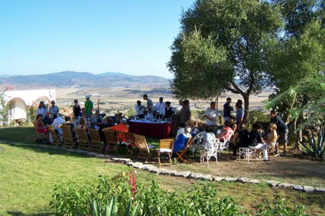

Days:
Total Price:
Présentation
Le gîte
Le Maylis, gîte Rural classé 1ère catégorie, se situe à 25 Km de Tanger
en direction d’Asilah. Adossé sur le flanc sud du Jebel Zhirou, il offre
une vue magnifique sur les contreforts du Rif. Therese vous accueille
dans ce cadre verdoyant, au cœur de la campagne, où tranquillité et
confort vous assurent un séjour reposant. Construit sur un terrain de
5000 m2, le gîte dispose de 6 chambres doubles et peut recevoir jusqu’à
12 personnes.
Le site
Le bâtiment principal et les bungalows sont agencés dans un grand jardin
entouré de figuiers de barbarie et d'un bois d'oliviers sauvages. Les
nombreux espaces communs font du gîte un vrai lieu de vie où vous
pourrez partager des moments de convivialité en famille ou entre amis.
A l'intérieur
Salle à manger, salons, bibliothèque et espaces couverts sous les
arcades sont à votre disposition pour prendre vos repas ou vous détendre
en profitant de la vue sur la campagne environnante.
Les chambres
Le gîte se compose de 6 chambres pour 2 personnes, dont 2
communicantes. Chaque chambre est équipée de rangements et d'une salle
de bain avec douche et WC. Elles disposent également d’espaces privatifs
en extérieur pour profiter du jardin en toute tranquillité.

Table d'hôtes
Le Maylis propose à ses hôtes un service de restauration. Sur demande,
nous pouvons vous préparer des repas à base de produits régionaux aux
saveurs marocaines ou méditerranéennes.
Activités


A proximité
Stages et séminaires
Les espaces utilisables en intérieur comme en extérieur font du gîte
un lieu idéal pour des séminaires ou des stages pour des groupes
jusqu'à 12 personnes.
La randonnée pour découvrir les richesses des paysages de la région
(possibilité d'être accompagné par un guide professionnel).
Le quad avec « Tanger quad ».
Les balades à cheval sur la plage ou en forêt avec le Royal Club équestre de Tanger.
L'initiation à la plongée à « La Piscine » (plage de Sidi Kacem).
Le quad avec « Tanger quad ».
Les balades à cheval sur la plage ou en forêt avec le Royal Club équestre de Tanger.
L'initiation à la plongée à « La Piscine » (plage de Sidi Kacem).
01
02
500
250
400
800
1200
150
1st Night (MAD)
Subsequent Nights (MAD)
Single Room
Double Room
Suite (Up to 4 people)
Children (Aged 6-12)
Tarifs
Localisation
Le Maylis se situe à 25 Km de Tanger en direction d’Asilah, à
proximité des autoroutes A1 et A4, et de l’aéroport international Ibn
Battouta
Coordonnées GPS : N 35°40'38.2'' W 005°51'38.6'' (35.677481,-5.861201)
Lien GoogleMap
Coordonnées GPS : N 35°40'38.2'' W 005°51'38.6'' (35.677481,-5.861201)
Lien GoogleMap